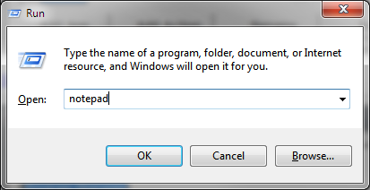
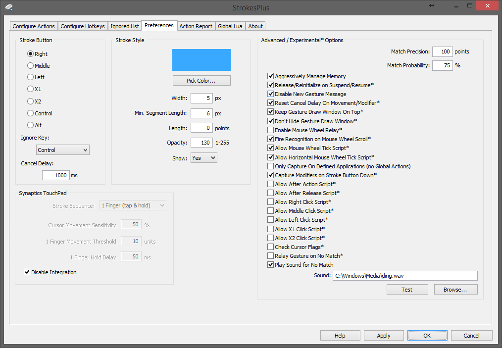
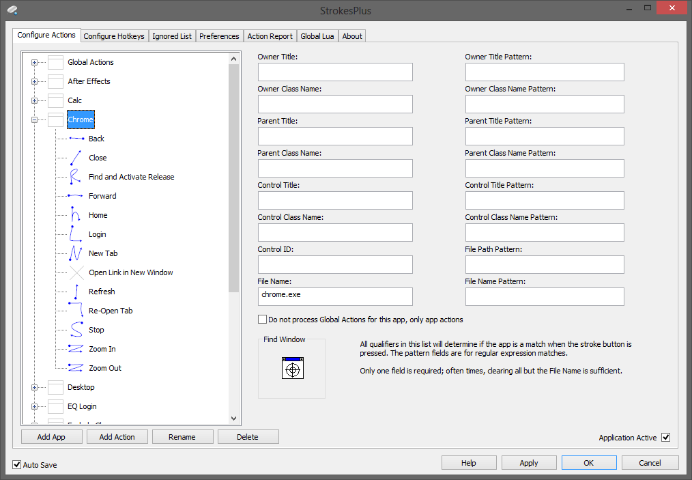
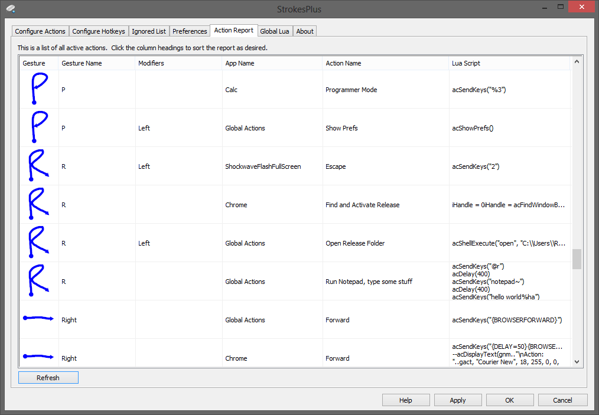

Table of Contents:
- Overview
- Getting Started
- Preferences
- Training Gestures
- Creating Actions
- Defining Applications
- Creating Hotkeys
- Ignored Windows
- Action Report
- Global Lua
- Variables available to all Lua scripts
- Action Functions
[back to top] Overview:
StrokesPlus is a mouse gesture recognition program that allows you to automate repetitive tasks by simply drawing a gesture with your mouse or performing mouse and/or keyboard modifiers to fire off an action sequence.
Whether the action sequence you're wanting to fire uses a gesture, mouse/keyboard modifier(s), or both, you begin with pressing the selected Stroke button on your mouse. By default, the Stroke button is assigned to the right mouse button. To begin, press and hold the Stroke button and either draw the gesture or perform the mouse/keyboard modifier(s), then release the Stroke button. If the events are recognized as being tied to an action sequence, StrokesPlus will fire the action sequence.
In Figure 1 below, we're going to draw the letter R by holding down the right mouse button, drawing the gesture R, then release the right mouse button. The gesture R is assigned to an action which opens the Windows Run dialog and types "notepad" (Figure 2), presses Enter, pauses for a moment, then types "hello world" followed by pressing ALT+H (to open the Help menu in Notepad) and finally presses "a" to select About Notepad from the menu, which displays the About Notepad window (Figure 3).
Figure 1

Figure 2
Figure 3

Many of the common tasks which people choose to create action sequences for are the very mundane aspects of using Windows, such as minimizing or maximizing a window, refreshing a web page, or closing a program. But the extent to which you can leverage StrokesPlus to increase your productivity is only limited by your imagination!
[back to top] Getting Started:
StrokesPlus comes with several gestures already trained and a variety of common action sequences already defined. To do anything other than use StrokesPlus to fire action sequences, you must right-click the StrokesPlus icon in the tray area of your taskbar, near the clock (Figure 4).
Figure 4

From this menu, you can:
- enter Training Mode (which can also be accomplished by middle-clicking the StrokesPlus icon)
- change the Stroke button
- enable or disable drawing of gestures on the screen
- disable StrokesPlus (which can also be accomplished by left-clicking the StrokesPlus icon or pressing CTRL+SHIFT+WIN+Z)
- Open the Ignore List window
- Open the Actions window (which can also be accomplished by left double-clicking the StrokesPlus icon)
- Open the Preferences window (which can also be accomplished by middle double-clicking the StrokesPlus icon)
- Set or change your password to encrypt StrokesPlus.xml and restrict access to the configuration window.
- Reload StrokesPlus' configuration data from StrokesPlus.xml
- Open this Help page
- Exit StrokesPlus (which can also be accomplished by pressing CTRL+ALT+SHIFT+WIN+END)
[back to top] Preferences:
Figure 5 represents the Preferences window in StrokesPlus. From this window, you can change several of StrokesPlus' features to meet your preferences.
Stroke Button - the mouse or keyboard button used to initiate firing action sequences
Ignore Key - held down before pressing the Stroke button if you do not want StrokesPlus to attempt to recognize an action. this is helpful when you want to perform some action in Windows or another application which requires using the Stroke Button. If you use a Stroke key, make sure you don't have the same key selected as the ignore key or StrokesPlus won't work.Note: See Cancel Delay below for these situations as well.
Cancel Delay - this is how long StrokesPlus waits for an action to timeout. For example, if you decided to right-click and drag some files in Windows Explorer, StrokesPlus would begin to look for action sequences to fire when you let go of the Stroke button. However, if you want StrokesPlus to stop capturing the sequence, simply keep the Stroke button held down and stop moving the mouse. After the number of milliseconds specified for Cancel Delay, StrokesPlus will stop capturing mouse and keyboard events, then replay the mouse events that occurred. In this instance, it would instantly move the mouse back to the starting position and send the right-click message, then move the mouse back to where you had it. So in this example, you would see the files attached to the mouse cursor just as you would if you had right-clicked and dragged some files in Explorer without StrokesPlus running (or if you had held the Ignore Key before pressing the right mouse button).
Synaptics TouchPad - If a Synaptics TouchPad and software is detected, allows you to specify whether 1 (tap & hold), 2, or 3 fingers will be used to capture a gesture. Cursor Movement Sensitivity controls how fast or slow the mouse pointer moves while drawing on the TouchPad; this can be 5% and higher. 1 Finger Movement Threshold specifies the number of ticks from the TouchPad above which the TouchPad activity is not considered a gesture (meaning you're just moving the pointer). 1 Finger Hold Delay is how long you have to hold your finger still for S+ to begin capturing a gesture. Check Disable Integration to prevent S+ from even loading the Synaptics interface internally.
Stroke Style - These fields allow you to customize how StrokesPlus draws gestures on the screen. Pick Color...lets you select the color of the gesture draw line. Width specifies how thick the line is. Min. Segment Length specifies the distance between drawing segments; mainly, this lets you set a minimum draw distance before S+ considers you've started drawing a Stroke. Length indicates the maximum length (trail) that StrokesPlus will draw, 0 for infinite. This doesn't affect the actual gesture being drawn, just how long the line is on the screen. Opacity affects the transparency of the line; 1 being nearly invisible and 255 being opaque (solid). Show instructs StrokesPlus whether or not to even draw the line at all.
Advanced / Experimental Options - these settings should used with caution as some of them could cause problems with StrokesPlus or other applications.
Match Precision - how finely StrokesPlus interpolates gestures to use for comparison. Default is 100 and there should be no need to change this setting.
Match Probability - the match likelihood of the drawn gesture to saved gestures. Higher makes the gesture matching more strict.
Aggressively Manage Memory - tells StrokesPlus to aggressively clean up memory at many points in the program's operation. Leave checked to ensure StrokesPlus uses the least amount of RAM while running. Uncheck if you want to let Windows manage the memory StrokesPlus uses; note that Windows is very liberal, only tidying up if other processes require memory used by other programs and available RAM has become limited.
Release/Reinitialize on Suspend/Resume - If checked, StrokesPlus will remove the tray icon, unhook the mouse and keyboard, and destroy the Synaptics (TouchPad) COM interface* when Windows enters a suspended mode (e.g. selecting Sleep from the shutdown menu). When Windows resumes, StrokesPlus will recreate its icon, re-hook the mouse and keyboard, and recreate the Synaptics (TouchPad) COM interface* (if S+ has not been disabled, of course).
* - Synaptics (TouchPad) COM interface is only destroyed/reinitialized when option 'Disable Integration' is not checked.
Disable New Gesture Message - prevents StrokesPlus from displaying the popup message when you click New to create a new gesture.
Reset Cancel Delay On Movement/Modifier - If unchecked, tells StrokesPlus to cancel gestures when the Cancel Delay is reached, regardless of mouse or keyboard activity.
Keep Gesture Draw Window On Top - always keep the transparent window to which StrokesPlus draws the gesture line on top. This can be helpful for low-power systems and prevent flickering UI elements for Windows XP users. However, there may be issues with other programs if they react to StrokesPlus' gesture window being above them. Therefore, this is an experimental feature.
Don't Hide Gesture Draw Window - when you're not drawing a gesture, the draw window is normally sent behind all other windows to increase performance and eliminate flickering and mouse lag when starting a new gesture. Uncheck this option to instruct StrokesPlus to hide the window completely. (This setting has no effect if Keep Gesture Draw Window On Top is checked.
Enable Mouse Wheel Relay - StrokesPlus will relay all mouse wheel scroll events directly to the control below the mouse cursor regardless of state. This lets you scroll controls, lists, windows which aren't active or selected by only scrolling the mouse wheel over top of them.
Fire Recognition on Mouse Wheel Scroll - StrokesPlus will attempt to recognize and fire actions when the mouse wheel is scrolled up or down (only when the Stroke button is being held down). This allows you to have actions which fire for each tick, this is helpful for volume actions, switching tabs, etc.
Allow Mouse Wheel Tick Script* - Enables the mouse wheel tick script described here.
Allow Horizontal Mouse Wheel Tick Script* - Enables the horizontal mouse wheel tick script described here.
Only Capture On Defined Applications (no Global Actions) - Global Actions are ignoed, Ignored apps are not processed, the mouse/TouchPad are only captured when drawing on a window which is part of a defined application in the Actions tab. This basically puts S+ into white list mode.
Capture Modifiers on Stroke Button Down* - In addition to capturing modifiers when they occur after the Stroke button is pressed, StrokesPlus will also get their state at the moment the Stroke button is pressed. So if you had the Control key held prior to pressing the Stroke button pressed (and held down at the time), the Control modifier would be recognized as part of the action definition.
Allow After Action Script* - Enables the After Action script described here. To address script error issues for some folks, I separated the processing for the After Action functionality. So if you don't use it, leaving this unchecked will be slightly more efficient.
Allow After Release Script* - Enables the After Release script described here. Lets you define a function in Global Lua which is called whenever the stroke button is released.
Allow Middle Click Script* - Enables the Middle Click script described here.
Allow X1 Click Script* - Enables the X1 Click script described here.
Allow X2 Click Script* - Enables the X2 Click script described here.
Check Cursor Flags* - Determines if S+ will check the cursor flags and decide whether to capture the mouse or not. If you have a program that's doing funky stuff with the mouse cursor and S+ won't capture gestures, try unchecking this option.
Relay Gesture on No Match* - Replays the gesture sequence if there was no match in apps or Global Actions. This only applies where a mouse button is the stroke button; modifiers or mouse wheel fire gestures are excluded from this feature.
Play Sound for No Match - Plays a sound if the gesture doesn't exist or doesn't match a defined action
Sound (file) - The WAV file to play when no match. If empty, the sound defined for Question within Windows is played.
Figure 5
[back to top] Training Gestures:
StrokesPlus comes with many gestures pre-trained, however, you can enter Training Mode if you want to create your own by selecting Training Mode from the StrokesPlus tray icon. You can also train StrokesPlus about existing gestures. For example, say that the way you draw the letter "R" on the screen is different than the way I do, StrokesPlus has learned the way I draw "R" and it may not recognize it when you draw "R". By entering Training Mode and drawing "R", you will see the window in Figure 6. If StrokesPlus recognizes the gesture, the text box will be pre-populated with the name of the gesture it believes was drawn. If StrokesPlus was incorrect in recognizing the gesture you intended, enter the name of the correct gesture here and click Save. This will add your drawing to the collection of point patterns associated with that gesture name. The more point patterns a gesture has associated with it, the better StrokesPlus may be at recognizing it.
Of course, if your drawing of "R" is dramatically different than the way I draw "R", it would be best to delete the "R" gesture from the Actions window and recreate one using only your point patterns so StrokesPlus will learn your style of "R" much faster. You will find that most gestures require only one point pattern (training capture), while others, like "R" and "B" will need several training sets for each letter since they're fairly similar, geometrically.
Figure 6

[back to top] Creating Actions:
Actions are the lifeblood of StrokesPlus. Here is where you tell StrokesPlus exactly what to do when you complete a gesture.
An action is recognized if all of the criteria are met. This includes the Gesture, Mouse Modifiers, and/or Key Modifiers. Only one of these items must be selected to be recognized by StrokesPlus. For example, I have an action defined with only the Left Button mouse modifier; no Gesture or Key Modifier selected; so all I do is press the Stroke button (right, for me) and press the left mouse button and let go of the right button. This is great for very repetitive tasks; I use it for opening links in a new browser tab. I also have an action defined with only Scroll Up which I use to increase the volume.
Though most gesture involve drawing something on the screen as it's very easy to have many gestures where there are only so many mouse buttons. Note that modifiers do not have to be held for the duration of the sequence, only performed once after the Stroke button is pressed. So if you pressed the Stroke button and started to draw, you could tap the Control key once before releasing the Stroke button and it would be recognized as the drawing+Control key and if you have an action defined with that drawing and the Control key, StrokesPlus would fire the Lua script for the action.
If you have Capture Modifiers on Stroke Button Down* checked in the Preferences tab, you can also qualify when modifiers are recognized for an action; either at the time the Stroke button is pressed, after it's pressed, or either time. This allows you to have two actions with the same gesture/modifier settings, but are recognized depending on when the modifier(s) was pressed. This is generally useful for creating rocker gestures, where you have an action that executes when you press the Right mouse button, then the left (together) and have another action fire when the Left mouse button is pressed and held first, followed by the Right mouse button.
The Available Actions dropdown displays a list of all actions exposed to Lua. The Info button will pop up a message describing the action. Clicking Insert will paste a snippet of the action into the Lua text box at the location of the cursor.
The Auto Save check box tells StrokesPlus if you want it to automatically save changes when you switch to a different app or action, or close the Actions window. If Auto Save is not checked, you must click Apply before changing actions or closing the window, or changes will be lost.
Variables and Actions cover the variables and actions StrokesPlus exposes to Lua. For general Lua syntax, simply search Google for "Lua Programming Reference".
Figure 7

[back to top] Defining Applications:
Global Actions are those which will fire regardless of what application is under the mouse (excluding Ignored windows, covered in the next section). However, you may want to have an entire set of gestures which are specific to only only application; like a web browser. To achieve this, click the Add App button, enter a name, and click OK. You will see a whole bunch of fields available to qualify and application and a Find Window box with a crosshair that can be used to locate an application, or only part of an application.
Only one field is required and generally the File Name is sufficient and will ensure the entire program is always matched. After using the Find Window crosshair, many of the fields will be populated with values. While you can leave them all as-is, it can create a very narrow scope that defines the app; potentially only a certain area of the app or only if the application's title happens to be exactly what was captured after using the Find Window tool. As I said, clear out all of the fields but File Name unless you're certain about the impact of how the qualifiers will affect your desired result.
The various Pattern fields are used to match based on regular expressions (uses BOOST regex library, FYI). This can be helpful if you want to match a broad or perhaps very specific type of condition to define an application.
When a gesture is complete, StrokesPlus will attempt to match applications first. If no match is found, then it will check the Global Actions for a match, unless Do not process Global Actions for this app, only app actions is checked
Figure 8
[back to top] Creating Hotkeys:
Hotkeys may be assigned to fire Lua scripts. These are just like Actions except no mouse is involved. These scripts run exactly as is; there are no extra variables passed in like gsx, gsy, etc. and do not trigger the sp_before_action and sp_after_action functions.
Figure 9

[back to top] Ignored Windows:
Ignored windows are those which will cause StrokesPlus to ignore the Stroke button when it's pressed on a window which is in the ignore list. To add a window to the ignored list, click the Add button, enter a name, and click OK. You will see a whole bunch of fields available to qualify and application and a Find Window box with a crosshair that can be used to locate an application, or only part of an application.
Only one field is required and generally the File Name is sufficient and will ensure the entire program is always matched. After using the Find Window crosshair, many of the fields will be populated with values. While you can leave them all as-is, it can create a very narrow scope that defines the ignored window; potentially only a certain area of the app or only if the application's title happens to be exactly what was captured after using the Find Window tool. As I said, clear out all of the fields but File Name unless you're certain about the impact of how the qualifiers will affect your desired result.
The various Pattern fields are used to match based on regular expressions (uses BOOST regex library, FYI). This can be helpful if you want to match a broad or perhaps very specific type of condition to define an application which is to be ignored.
The checkbox Disable S+ if this application is activated tells S+ to completely unhook the mouse and keyboard if the ignored application becomes the active (foreground) window. This is useful if you want to disable S+ when a full screen game opens. Since ignoring the game window still involves S+ checking if the window is ignored each time the Stroke button is pressed, this can cause a very brief delay before S+ forwards the mouse event to the game. For high-performance applications, having S+ disabled is definitely the way to go, especially when it comes to gaming. Note that you will have to manually re-enable S+ once it disables itself due to this option being checked as there's no reliable way for S+ to know that you want it re-enabled.
Don't forget to click Apply after making any changes in this window if you don't have Auto Save checked.
Figure 10

[back to top] Action Report:
This tab shows you a list of all defined and active actions.
Figure 11
[back to top] Global Lua:
This tab shows you the contents of your StrokesPlus.lua file. You can use this file to define your own functions or variables that may be used by all actions.
Figure 12

[back to top] Variables available to all Lua scripts:
The following variables are populated automatically when completing a gesture. They are often used by many of the action functions (covered in the next section) to identify the window(s) to be affected by the action.
sp_gesture_name (may also be referenced as gnm): string - The name of the drawn gesturesp_gesture_start_x (may also be referenced as gsx): integer - The X coordinate of where the gesture began
sp_gesture_start_y (may also be referenced as gsy): integer - The Y coordinate of where the gesture began
sp_gesture_end_x (may also be referenced as gex): integer - The X coordinate of where the gesture ended
sp_gesture_end_y (may also be referenced as gey): integer - The Y coordinate of where the gesture ended
sp_wheel_delta (may also be referenced as gwd): integer - The mouse wheel scroll delta [positive or negative number], standard mouse wheels are 120 per wheel tick
sp_app_name (may also be referenced as gapp): string - The name of the application that was matched, or "Global Actions" (or whatever is specified in Language.xml)
sp_action_name (may also be referenced as gact): string - The name of the action that was matched
gbl: integer - The bounding left coordinate (left-most X of the drawn gesture)
gbt: integer - The bounding top coordinate (top-most Y of the drawn gesture)
gbr: integer - The bounding right coordinate (right-most X of the drawn gesture)
gbb: integer - The bounding bottom coordinate (bottom-most Y of the drawn gesture)
Additionally, alien.core and alien.struct are available to Lua scripts for making direct DLL calls. You do not need to include:
require "alien"
..in your Lua script (as many sample scripts on the Internet do), you will receive an error, unless the alien DLLs are somewhere in the path, but I'm not so sure they would play well together...so that's at your own risk.
Example Lua Script to directly call user32.dll to display a message box (not via the bound acMessageBox(), this is directly calling it):
local alien = alien.core
local mb = alien.load("user32.dll")
local messagebox = mb.MessageBoxA
messagebox:types{ ret = 'long', abi = 'stdcall', 'long', 'pointer', 'string', 'long' }
test = "test"
messagebox(0, test, "test2", 0)
Note that making direct DLL calls can cause S+/the Lua engine to crash hard if you screw something up in the script or defining the call(s), so this is a use at your own risk feature. I would recommend installing Lua for Windows and testing scripts in there if you're having problems or before adding to an action (removing require "alien" references).
Also, you may include any variables or functions in the file StrokesPlus.lua in the same folder as StrokesPlus.exe. When StrokesPlus loads (or you select Reload Config from the tray menu), any Lua in StrokesPlus.lua is executed and persisted. For example, if you wanted to create your own Lua function that you wanted to be able to call from any action, you could store it in StrokesPlus.lua. Or perhaps you want to create some global variables that are shared across actions, they could be declared/initialized there as well.
Beginning with StrokesPlus version 1.9.7, the following action may be defined in StrokesPlus.lua (by you) if you'd like certain Lua code to fire before all of your action scripts. For example, some people may wish to have a call to acActivateWindow before all actions scripts.
To utilize this functionality, you must define the function you wish S+ to fire using the template below:
function sp_before_action(gnm, gsx, gsy, gex, gey, gwd, gapp, gact) --your code here endNote that sp_before_action is called after the local variables are set (gnm, gsx, gsy, etc.) so your code can work with them as needed.
Beginning with StrokesPlus version 1.9.8, the following action may be defined in StrokesPlus.lua (by you) if you'd like certain Lua code to fire after all of your action scripts. However, you must enable the Allow After Action Script* option in Preferences first. As the option indicates, this may cause script errors for some users. I am unable to reproduce, thus troubleshoot, the cause of the error so this feature is here for those who do not encounter the script errors.
To utilize this functionality, you must define the function you wish S+ to fire using the template below:
function sp_after_action(gnm, gsx, gsy, gex, gey, gwd, gapp, gact) --your code here end
Beginning with StrokesPlus version 2.4.7, the following action may be defined in StrokesPlus.lua (by you) if you'd like certain Lua code to fire when Lua state 1 is initialized. For example, some people may wish to have a call to acToggleTrayIcon(-1) [to hide the S+ tray icon) when S+ starts.
To utilize this functionality, you must define the function you wish S+ to fire using the template below:
function sp_init() --your code here endNote that sp_init is only called by Lua state 1. As such, only stateless/non-persistent code should be used here.
Beginning with StrokesPlus version 2.6.2, the following action may be defined in StrokesPlus.lua (by you) if you'd like certain Lua code to fire after you release the stroke button (where S+ captured the mouse). However, you must enable the Allow After Release Script* option in Preferences first.
To utilize this functionality, you must define the function you wish S+ to fire using the template below:
function sp_after_release() --your code here end
Beginning with StrokesPlus version 2.7.3 (and function template changed in 2.8.0), the following action may be defined in StrokesPlus.lua if you'd like certain Lua code to fire when you click the middle mouse button (when the middle button is not the stroke button). However, you must enable the Allow Middle Click Script* option in Preferences first.
To utilize this functionality, you must define the function you wish S+ to fire using the template below:
function sp_middle_mouse_up(x, y, fwKeys) --your code here -- x = the x coordinate of the mouse where the middle button was clicked -- y = the y coordinate of the mouse where the middle button was clicked -- fwKeys = the key state at the time the middle button was pressed endNote that standard ignored window checks will occur at the location of the mouse when the middle click is pressed. This functionality also adheres to the rules of the Only Capture On Defined Applications (no Global Actions), if enabled.
Beginning with StrokesPlus version 2.7.9, the following action may be defined in StrokesPlus.lua if you'd like certain Lua code to fire when you scroll the mouse wheel. However, you must enable the Allow Mouse Wheel Tick Script* option in Preferences first.
To utilize this functionality, you must define the function you wish S+ to fire using the template below:
function sp_wheel_tick(control, wParam, lParam, x, y, delta) --your code here -- control = the handle to the control below the mouse -- wParam = the pre-crafted wParam of the mouse wheel event, to either deconstruct for use or relay to the control -- lParam = same as above, but for the lParam -- x = the x coordinate of the mouse where the wheel was scrolled -- y = the y coordinate of the mouse where the wheel was scrolled -- delta = the delta of the mouse wheel scroll, usually it is 120 for a single wheel tick scrolling up and -120 scrolling down for one tick endNote that standard ignored window checks will occur at the location of the mouse when the mouse wheel is scrolled. This functionality also adheres to the rules of the Only Capture On Defined Applications (no Global Actions), if enabled.
Beginning with StrokesPlus version 2.8.0, the following actions may be defined in StrokesPlus.lua if you'd like certain Lua code to fire when you scroll or tilt the horizontal mouse wheel, or press X1 or X2 mouse buttons (left and right clicks added in 2.8.2). However, you must enable the Allow Horizontal Mouse Wheel Tick Script*, Allow X1 Click Script*, or Allow X2 Click Script*, respectively, option in Preferences first.
To utilize this functionality, you must define the function you wish S+ to fire using the templates below:
Horizontal Mouse Wheel:
function sp_h_wheel_tick(control, wParam, lParam, x, y, delta) --your code here -- control = the handle to the control below the mouse -- wParam = the pre-crafted wParam of the mouse wheel event, to either deconstruct for use or relay to the control -- lParam = same as above, but for the lParam -- x = the x coordinate of the mouse where the wheel was scrolled -- y = the y coordinate of the mouse where the wheel was scrolled -- delta = the delta of the mouse wheel scroll, usually it is 120 for a single wheel tick scrolling up and -120 scrolling down for one tick endX1 Click:
function sp_x1_mouse_up(x, y, fwKeys) -- x = the x coordinate of the mouse where the X1 button was clicked -- y = the y coordinate of the mouse where the X1 button was clicked -- fwKeys = the key state at the time the X1 button was pressed endX2 Click:
function sp_x2_mouse_up(x, y, fwKeys) -- x = the x coordinate of the mouse where the X2 button was clicked -- y = the y coordinate of the mouse where the X2 button was clicked -- fwKeys = the key state at the time the X2 button was pressed endLeft Click:
function sp_left_mouse_up(x, y, fwKeys) -- x = the x coordinate of the mouse where the left button was clicked -- y = the y coordinate of the mouse where the left button was clicked -- fwKeys = the key state at the time the left button was pressed endRight Click:
function sp_right_mouse_up(x, y, fwKeys) -- x = the x coordinate of the mouse where the right button was clicked -- y = the y coordinate of the mouse where the right button was clicked -- fwKeys = the key state at the time the right button was pressed endNote that standard ignored window checks will occur at the location of the mouse when the horizontal mouse wheel is scrolled or Left/Right/X1/X1 is pressed. This functionality also adheres to the rules of the Only Capture On Defined Applications (no Global Actions), if enabled.
[back to top] Action Functions:
Locate Window Actions:
acFindWindow
acFindWindowByTitleRegex
acGetAllWindows
acGetOwnerWindowByPoint
acGetParentWindowByPoint
acGetWindowByPoint
acGetForegroundWindow
acGetDesktopWindow
Window State Actions:
acActivateWindow
acPauseResumeThreadList
acSetProcessPriority
acTerminateProcess
acCloseApplication
Window Placement Actions:
acMoveWindow
acMinimizeWindow
acRestoreWindow
acMaximizeWindow
acMaximizeOrRestoreWindow
acTileWindows
Window Size Actions:
acGetWindowLeft
acGetWindowTop
acGetWindowRight
acGetWindowBottom
acSetWindowSize
Window Order Actions:
acSetTopmost
acClearTopmost
acToggleTopmost
acSendWindowToBottom
acPreviousApplication
acNextApplication
Window Transparency and Color Key Actions:
acGetWindowTransparency
acGetWindowColorKeyR
acGetWindowColorKeyG
acGetWindowColorKeyB
acSetWindowColorKey
acSetWindowTransparencyAndColorKey
acSetWindowTransparency
Miscellaneous Window Actions:
acGetWindowTitle
acGetClassName
acGetControlID
acGetExecutableName
Multiple Monitor Actions:
acCenterWindowToScreen
acClipWindowToScreen
acFitWindowToScreen
acMaximizeToAllScreens
acGetMonitorBrightness
acSetMonitorBrightness
acGetMonitorFromPoint
acGetMonitorName
acSendWindowToPreviousMonitor
acSendWindowToMonitorByName
acSendWindowToMonitorByHandle
acSendWindowToNextMonitor
acGetMonitorFromName
acGetMonitorBottom
acGetMonitorTop
acGetMonitorLeft
acGetMonitorRight
Keyboard Actions:
acSendKeys
acSendKeyDown
acSendKeyUp
acSendWinDown
acSendWinUp
acSendControlDown
acSendControlUp
acSendAltDown
acSendAltUp
acSendShiftDown
acSendShiftUp
Mouse Actions:
acGetMouseLocationX
acGetMouseLocationY
acMouseMove
acMouseClick
acGetMouseCursorType
acAutoHideMouseCursor
acHideMouseCursor
acShowMouseCursor
Clipboard Actions:
acGetClipboardText
acSetClipboardText
Audio Actions:
acSetVolume
acGetVolume
acToggleMute
acGetMute
acSetMute
acPlaySound
Utility Actions:
acConsumePhysicalInput
acDelay
acGetSystemMetrics
acGetPixelRByPoint
acGetPixelGByPoint
acGetPixelBByPoint
acSetDisplayGamma
acMessageBox
acDisplayBalloonTip
acDisplayText
acKillDisplayText
acGetProcessIDFromPattern
acGetWindowFromProcessID
acIsImmersiveProcess
acGetFileVersion
acGetFileProductVersion
acInputBox
acRunProgram
acShellExecute
acLockWindows
acGetNumber
acSetNumber
Windows Registry Actions:
acRegistryCreateKey
acRegistryDeleteKey
acRegistryDeleteValue
acRegistryGetString
acRegistrySetString
acRegistryGetNumber
acRegistrySetNumber
Windows Messages Actions:
acSendMessage
acPostMessage
StrokesPlus Control Actions:
acShowSettings
acShowActions
acShowHotkeys
acShowIgnoreList
acShowPrefs
acShowAbout
acDisable
acDisableNext
acDisableCapture
acEnableCapture
acDisableHotkey
acEnableHotkey
acReloadConfig
acRelayGesture
acToggleTrayIcon
acExit
acActivateWindow(hwndTarget, x, y, method)
Parameters:
hwndTarget: The handle to the window to be activated; "nil" will use the x and y to locate the window
x: The X (left) coordinate of the window to be activated
y: The Y (top) coordinate of the window to be activated
method: The type of method used to activate the window; 0 for standard, 1 for thread input, 2 for temporary ALT keypress. Use 0 (default) first, only use the others if 0 isn't working for you.
Returns: integer (always 1)
Comments: Activates the window at the specified coordinates
acAutoHideMouseCursor(hidetimer, rehidetimer)
Parameters:
hidetimer: How long (in milliseconds) to wait without mouse movement before hiding the mouse cursor. Passing 0 (zero) disables auto-hiding.
rehidetimer: How often (in milliseconds) to rehide the mouse cursor if it should be hidden (in case another applications re-displays the cursor)
Returns: integer (always 1)
Comments: Auto-hides all standard mouse cursors based on the specified timers.
acCenterWindowToScreen(hwndTarget, x, y, useworkarea)
Parameters:
hwndTarget: The handle to the desired window (if "nil", x and y will be used to get the window at those coordinates)
x: If no hwndTarget is specified, this is gets the handle of the window at the x and y coordinates
y: See above
useworkarea: (0 for False, 1 for True) whether to use the work area of the screen or not (work area excludes the space used by the taskbar)
Returns: integer (always 1)
Comments: Centers on the window on the screen
acClipWindowToScreen(hwndTarget, x, y, useworkarea)
Parameters:
hwndTarget: The handle to the desired window (if "nil", x and y will be used to get the window at those coordinates)
x: If no hwndTarget is specified, this is gets the handle of the window at the x and y coordinates
y: See above
useworkarea: (0 for False, 1 for True) whether to use the work area of the screen or not (work area excludes the space used by the taskbar)
Returns: integer (always 1)
Comments: Re-positions the window on the screen, does the best to ensure the window is not outside the screen boundaries, but does not resize the window
acClearTopmost(hwndTarget, x, y)
Parameters:
hwndTarget: The handle to the window; "nil" will use the x and y to locate the window
x: The X (left) coordinate of the window
y: The Y (top) coordinate of the window
Returns: integer (always 1)
Comments: Clears the TOPMOST flag of the window
acCloseApplication(hwndTarget, x, y)
Parameters:
hwndTarget: The handle to the window to be closed; "nil" will use the x and y to locate the window
x: The X (left) coordinate of the window to be closed
y: The Y (top) coordinate of the window to be closed
Returns: integer (always 1)
Comments: Closes the window at the specified coordinates
acConsumePhysicalInput(value)
Parameters:
value: (0 for False, 1 for True) whether S+ should consume ALL physical (mouse and keyboard) input.
Returns: integer (always 1)
Comments: This may be useful if you're about to call a mouse or keyboard action where you don't want any physical input to interfere with the action. But make sure you call again, passing 0, within the SAME Lua script to enable input or your computer may become unusable!
acDelay(duration)
Parameters:
duration: (ms) Number of millisecond to pause
Returns: integer (always 1)
Comments: Pauses the Lua script for the specified duration (Sleep(n))
acDisable()
Returns: integer (always 1)
Comments: Disables StrokesPlus.
acDisableCapture()
Returns: integer (always 1)
Comments: Prevents StrokesPlus from capturing the mouse until acEnableCapture() is called, or the Lua states are reinitialized.
acDisableHotkey(hkid)
Parameters:
hkid: The internal id of the hotkey; this is stored in hkid and available only to the hotkey's script.
Returns: integer (always 1)
Comments: Unregisters the hot key. Intended for use only within the script for the hotkey. hkid is automatically defined and passed into the hotkey's script.
acDisableNext()
Returns: integer (always 1)
Comments: Disables the next gesture from being captured
acDisplayBalloonTip(title, message, icon)
Parameters:
title: The title to display
message: The message to display
icon: The icon to display in the balloon: 0 = None, 1 = Info, 2 = Warning, 3 = Error
Returns: integer (always 1)
Comments: Displays a balloon tip near the S+ tray icon. Note that Windows limits the frequency at which balloon tips can be displayed and the timing in general, so if you try to call this again a few seconds after the tip was dismissed, nothing will happen. Seems to be different in WinXP vs. Win7.
acDisplayText()
Parameters:
message: The text to display
font: The name of the font to use
size: The size of the text
red: The red portion of the color of the text color (RGB)
green: The green portion of the color of the text color (RGB)
blue: The blue portion of the color of the text color (RGB)
duration: How long to display the text, in milliseconds
x: The X (left) coordinate to place the text
y: The Y (top) coordinate to place the text
Returns: integer (always 1)
Comments: Displays the specified text on the screen.
acEnableCapture()
Returns: integer (always 1)
Comments: Instructs StrokesPlus to resume capturing the mouse after acDisableCapture() is called.
acEnableHotkey(hkid)
Parameters:
hkid: The internal id of the hotkey; this is stored in hkid and available only to the hotkey's script.
Returns: integer (always 1)
Comments: Re-registers the hot key. Intended for use only within the script for the hotkey. hkid is automatically defined and passed into the hotkey's script.
acExit()
Returns: integer (always 1)
Comments: Exits StrokesPlus
acFindWindow(classname, title)
Parameters:
classname: The class name of the window to be located
title: The title of the window to be located
Returns: integer - Handle to the window, 0 if not found
Comments: Finds a window by class and title, exact match. Pass [b]nil[/b] in place of either parameter to exclude it from the search. For example, acFindWindow("Winamp v1.x",nil) will find the Winamp class and ignore qualifying on title.
acFindWindowByTitleRegex(titlepattern)
Parameters:
titlepattern: The regular expression to use when searching for a window title
Returns: integer - Handle to the window, 0 if not found
Comments: Finds the first window by matching the title to the regular expression passed in
acFitWindowToScreen(hwndTarget, x, y, useworkarea)
Parameters:
hwndTarget: The handle to the desired window (if "nil", x and y will be used to get the window at those coordinates)
x: If no hwndTarget is specified, this is gets the handle of the window at the x and y coordinates
y: See above
useworkarea: (0 for False, 1 for True) whether to use the work area of the screen or not (work area excludes the space used by the taskbar)
Returns: integer (always 1)
Comments: Fits the window to the screen it's mostly occupying, so it takes up the whole screen.
acGetAllWindows(toplevel)
Parameters:
toplevel: 0 to return ALL window handles (a lot), 1 to return only top-level windows (recommended)
Returns: integer (always 1)
Comments: Fills global table sp_all_windows with the requested window handles. You do not need to define the sp_all_windows table.
acGetClassName(hwndTarget, x, y)
Parameters:
hwndTarget: The handle to the window or control; "nil" will use the x and y to locate the window or control
x: The X (left) coordinate of the window or control to be located
y: The Y (top) coordinate of the window or control to be located
Returns: string
Comments: Gets the class name of the specified window or control. Note that unlike other actions where X and Y return the OWNING window, this control returns the window at the point specified, so if the point of over a button, the button's class name will be returned. You can call acGetOwnerWindowByPoint() or acGetParentWindowByPoint() if you'd like to walk up the container hierarchy.
acGetClipboardText()
Returns: string
Comments: Returns the current text of the clipboard
acGetControlID(hwndTarget, x, y)
Parameters:
hwndTarget: The handle to the window or control; "nil" will use the x and y to locate the window or control
x: The X (left) coordinate of the window or control to be located
y: The Y (top) coordinate of the window or control to be located
Returns: string
Comments: Gets the control ID for the specified control handle.
acGetDesktopWindow()
Returns: integer
Comments: Returns the handle of the Desktop window, this window which represents the Windows Desktop
acGetExecutableName(hwndTarget, x, y)
Parameters:
hwndTarget: The handle to the window; "nil" will use the x and y to locate the window
x: The X (left) coordinate of the window to be located
y: The Y (top) coordinate of the window to be located
Returns: string
Comments: Gets the name of the EXE which owns the window
acGetFileVersion(file, hwndTarget, x, y)
Parameters:
file: The full path to the file; "" will use either the hwndTarget or x,y to report based on a window hwndTarget: The handle to the window; "nil" will use the x and y to locate the window
x: The X (left) coordinate of the window to be located
y: The Y (top) coordinate of the window to be located
Returns: string
Comments: Gets the file version of the file specified in the file parameter, or which owns the window when file is empty
acGetFileProductVersion(file, hwndTarget, x, y)
Parameters:
file: The full path to the file; "" will use either the hwndTarget or x,y to report based on a window hwndTarget: The handle to the window; "nil" will use the x and y to locate the window
x: The X (left) coordinate of the window to be located
y: The Y (top) coordinate of the window to be located
Returns: string
Comments: Gets the file's product version of the file specified in the file parameter, or which owns the window when file is empty
acGetForegroundWindow()
Returns: integer
Comments: Returns the handle of the foreground (top) window, the one which is currently active
acGetMonitorBrightness(monitorhandle, x, y, mode)
Parameters:
monitorhandle: The handle to the monitor
x: the x coordinate of the point used to locate the monitor
y: the y coordinate of the point used to locate the monitor
mode: 1 = current value, 2 = minimum supported value, 3 = maximum supported value
Returns: integer (1 for success, -1 for failure)
Comments: Returns the specified brightness (based on mode parameter) value of the first physical monitor associated with the monitor handle (not supported prior to Vista nor on some displays, see change log for details)
acGetMonitorBottom(monitorhandle, useworkarea)
Parameters:
monitorhandle: The handle to the monitor
useworkarea: Whether to consider only the work area, not full monitor (excludes taskbar, docked windows)
Returns: integer
Comments: Gets the CY (bottom) coordinate of the specified monitor
acGetMonitorFromName(monitorname)
Parameters:
monitorname: The name of the monitor (value must be in escaped form, "\\" for "\", e.g. "\\.\DISPLAY1" would be written in Lua script as "\\\\.\\DISPLAY1")
Returns: integer - monitor handle
Comments: Gets handle to the specified monitor
acGetMonitorFromPoint(x, y)
Parameters:
x: the x coordinate of the point used to locate the monitor
y: See above
Returns: integer
Comments: Returns the handle to the monitor where the x,y is located
acGetMonitorLeft(monitorhandle, useworkarea)
Parameters:
monitorhandle: The handle to the monitor
useworkarea: Whether to consider only the work area, not full monitor (excludes taskbar, docked windows)
Returns: integer
Comments: Gets the X (left) coordinate of the specified monitor
acGetMonitorName(monitorhandle)
Parameters:
monitorhandle: Handle to the monitor
Returns: string
Comments: Returns the name of the monitor
acGetMonitorRight(monitorhandle, useworkarea)
Parameters:
monitorhandle: The handle to the monitor
useworkarea: Whether to consider only the work area, not full monitor (excludes taskbar, docked windows)
Returns: integer
Comments: Gets the CX (right) coordinate of the specified monitor
acGetMonitorTop(monitorhandle, useworkarea)
Parameters:
monitorhandle: The handle to the monitor
useworkarea: Whether to consider only the work area, not full monitor (excludes taskbar, docked windows)
Returns: integer
Comments: Gets the Y (top) coordinate of the specified monitor
acGetMouseCursorType()
Returns: string
Comments: Returns the name of the mouse current mouse cursor:
ARROW, IBEAM, WAIT, CROSS, UP, SIZENWSE, SIZENESW, SIZEWE, SIZENS, SIZEALL, NO, HAND, APPSTARTING, HELP, or Unknown
acGetMouseLocationX()
Returns: integer
Comments: Returns the X (left) coordinate of the current mouse location
acGetMouseLocationY()
Returns: integer
Comments: Returns the Y (top) coordinate of the current mouse location
acGetMute()
Returns: integer - 1 for muted, 0 for not muted
Comments: Returns the state of the mute on the master channel
acGetNumber()
Returns: integer - the value stored in S+ set by calling acSetNumber
Comments: Returns the value previously stored by acSetNumber
acGetOwnerWindowByPoint(x, y)
Parameters:
x: The X (left) coordinate of the window
y: The Y (top) coordinate of the window
Returns: integer
Comments: Returns the handle of the owner (ancestor) window to which the target window belongs
acGetParentWindowByPoint(x, y)
Parameters:
x: The X (left) coordinate of the window
y: The Y (top) coordinate of the window
Returns: integer
Comments: Returns the handle of the parent window to which the target window belongs
acGetPixelBByPoint(x, y)
Parameters:
x: The X (left) coordinate of the point
y: The Y (top) coordinate of the point
Returns: integer 0-255
Comments: Gets the blue (B) part of the color at the specified point
acGetPixelGByPoint(x, y)
Parameters:
x: The X (left) coordinate of the point
y: The Y (top) coordinate of the point
Returns: integer 0-255
Comments: Gets the green (G) part of the color at the specified point
acGetPixelRByPoint(x, y)
Parameters:
x: The X (left) coordinate of the point
y: The Y (top) coordinate of the point
Returns: integer 0-255
Comments: Gets the red (R) part of the color at the specified point
acGetProcessIDFromPattern(filepattern)
Parameters:
filepattern: The name or regular expression pattern to search for.
Returns: integer - the process ID if a match is found, 0 if not
Comments: Determines if there is a process running which matches the file pattern. File pattern can be the exact name of the executable, or a regular expression for wildcard searches.
acGetSystemMetrics(value)
Parameters:
value: The ID (number) (based on Win32 specs) which to retreive
Returns: integer - The value returned by Windows
Comments: This directly calls GetsystemMetrics, which can be useful in finding out various metrics of the Windows configuration. See: http://msdn.microsoft.com/en-us/library/windows/desktop/ms724385.aspx
acGetVolume()
Returns: integer - Current volume level, 0-100
Comments: Returns the current volume of the master channel
acGetWindowBottom(hwndTarget, x, y)
Parameters:
hwndTarget: The handle to the desired window (if "nil", x and y will be used to get the window at those coordinates)
x: If no hwndTarget is specified, this is gets the handle of the window at the x and y coordinates
y: See above
Returns: integer
Comments: Gets the CY (bottom) of the specified window
acGetWindowByPoint(x, y)
Parameters:
x: The X (left) coordinate of the window
y: The Y (top) coordinate of the window
Returns: integer
Comments: Returns the handle of the window at the specified coordinates
acGetWindowColorKeyB(hwndTarget, x, y)
Parameters:
hwndTarget: The handle to the window; "nil" will use the x and y to locate the window
x: The X (left) coordinate of the window
y: The Y (top) coordinate of the window
Returns: integer 0-255
Comments: Gets the blue (B) part of the color to which the window's color key is
acGetWindowColorKeyG(hwndTarget, x, y)
Parameters:
hwndTarget: The handle to the window; "nil" will use the x and y to locate the window
x: The X (left) coordinate of the window
y: The Y (top) coordinate of the window
Returns: integer 0-255
Comments: Gets the green (G) part of the color to which the window's color key is
acGetWindowColorKeyR(hwndTarget, x, y)
Parameters:
hwndTarget: The handle to the window; "nil" will use the x and y to locate the window
x: The X (left) coordinate of the window
y: The Y (top) coordinate of the window
Returns: integer 0-255
Comments: Gets the red (R) part of the color to which the window's color key is
acGetWindowFromProcessID(processID)
Parameters:
processID: The process ID to use when searching for a top-level window.
Returns: integer - handle to the first top-level window of the process, or nil if no match was found.
Comments: Searches for a top-level window that belongs to the process ID passed. If a match is found, the handle is returned, otherwise nil is returned.
acGetWindowLeft(hwndTarget, x, y)
Parameters:
hwndTarget: The handle to the desired window (if "nil", x and y will be used to get the window at those coordinates)
x: If no hwndTarget is specified, this is gets the handle of the window at the x and y coordinates
y: See above
Returns: integer
Comments: Gets the X (left) coordinate of the specified window
acGetWindowRight(hwndTarget, x, y)
Parameters:
hwndTarget: The handle to the desired window (if "nil", x and y will be used to get the window at those coordinates)
x: If no hwndTarget is specified, this is gets the handle of the window at the x and y coordinates
y: See above
Returns: integer
Comments: Gets the CX (right) of the specified window
acGetWindowTitle(hwndTarget, x, y)
Parameters:
hwndTarget: The handle to the window; "nil" will use the x and y to locate the window
x: The X (left) coordinate of the window
y: The Y (top) coordinate of the window
Returns: string - Window title
Comments: Returns the title of the window specified
acGetWindowTop(hwndTarget, x, y)
Parameters:
hwndTarget: The handle to the desired window (if "nil", x and y will be used to get the window at those coordinates)
x: If no hwndTarget is specified, this is gets the handle of the window at the x and y coordinates
y: See above
Returns: integer
Comments: Gets the Y (top) coordinate of the specified window
acGetWindowTransparency(hwndTarget, x, y)
Parameters:
hwndTarget: The handle to the window; "nil" will use the x and y to locate the window
x: The X (left) coordinate of the window
y: The Y (top) coordinate of the window
Returns: integer 0-255
Comments: Gets the level of transparency of a window, 0 being invisible, 255 being solid
acHideMouseCursor()
Returns: integer (always 1)
Comments: Hides all standard mouse cursors.
acInputBox(title, message, default, delim)
Parameters:
title: The text to display in the title bar of the input box window
message: The text to display on the form of the input box window
default: The default value to populate the text box with
delim: If specified, the default parameter is split on this delimiter value and a dropdown list is generated
Returns: string
Comments: Displays a windows which accepts user input.
acIsImmersiveProcess(hwndTarget, x, y)
Parameters:
hwndTarget: The handle to the window; "nil" will use the x and y to locate the window
x: The X (left) coordinate of the window to be located
y: The Y (top) coordinate of the window to be located
Returns: integer - 0 if window is not immersive, 1 if it is
Comments: Determines if the process owning the window is immersive (Windows 8 Metro/App Store program)
acKillDisplayText()
Returns: integer (always 1)
Comments: Force closes the acDisplayText window before duration timeout has been reached.
acLockWindows()
Returns: integer (always 1)
Comments: Locks Windows, equivalent of pressing WIN+L
acMaximizeWindow(hwndTarget, x, y)
Parameters:
hwndTarget: The handle to the window to be maximized; "nil" will use the x and y to locate the window
x: The X (left) coordinate of the window to be maximized
y: The Y (top) coordinate of the window to be maximized
Returns: integer (always 1)
Comments: Maximizes the window at the specified coordinates
acMaximizeOrRestoreWindow(hwndTarget, x, y)
Parameters:
hwndTarget: The handle to the window to be restored or maximized; "nil" will use the x and y to locate the window
x: The X (left) coordinate of the window to be restored or maximized
y: The Y (top) coordinate of the window to be restored or maximized
Returns: integer (always 1)
Comments: Restores or maximizes the window, depending on its state at the specified coordinates
acMaximizeToAllScreens(hwndTarget, x, y)
Parameters:
hwndTarget: The handle to the desired window (if "nil", x and y will be used to get the window at those coordinates)
x: If no hwndTarget is specified, this is gets the handle of the window at the x and y coordinates
y: See above
Returns: integer (always 1)
Comments: Stretches the window so it takes up the whole desktop, across all screens. Generally, this isn't very practical, but it's there for what it's worth.
acMessageBox(message, title, style)
Parameters:
message: The main message to be displayed
title: Title of the message box window
style: The integer (based on Win32 specs) which represents the style of the message box, which includes the icon, buttons, and default button. nil for no style (Ok button only)
Returns: integer - The value returned by the message box, if a style was specified, which button was clicked will be returned (like a Yes/No box, the return value indicates the button that was clicked)
Comments: Displays a standard Windows message box. May pass in style to customize the icon and buttons.
acMinimizeWindow(hwndTarget, x, y)
Parameters:
hwndTarget: The handle to the window to be minimized; "nil" will use the x and y to locate the window
x: The X (left) coordinate of the window to be minimized
y: The Y (top) coordinate of the window to be minimized
Returns: integer (always 1)
Comments: Minimizes the window at the specified coordinates
acMouseClick(x, y, button, down, up)
Parameters:
x: The X (left) coordinate of where the click should occur
y: The Y (top) coordinate of where the click should occur
button: The mouse button which should be sent
0: Secondary button (right by default, unless mouse buttons are swapped)
1: Middle button
2: Primary button (left by default, unless mouse buttons are swapped)
3: X1 button
4: X2 button
down: (0 for False, 1 for True) If the MOUSE_BUTTON_DOWN message should be sent
up: (0 for False, 1 for True) If the MOUSE_BUTTON_UP message should be sent
Returns: integer (always 1)
Comments: Send a mouse down and/or up event at the specified coordinates
acMouseMove(x, y)
Parameters:
x: The X (left) coordinate to move the mouse cursor to
y: The Y (top) coordinate to move the mouse cursor to
Returns: integer (always 1)
Comments: Moves the mouse cursor to the specified coordinates
acMoveWindow(hwndTarget, x, y, left, top)
Parameters:
hwndTarget: The handle to the window to be moved; "nil" will use the x and y to locate the window
x: The X (left) coordinate of the window to be moved
y: The Y (top) coordinate of the window to be moved
left: The new X (left) coordinate of the window's location
top: The new Y (top) coordinate of the window's location
Returns: integer (always 1)
Comments: Moves the window using the specified coordinates
acNextApplication()
Returns: integer (always 1)
Comments: Switches to the next application in the window list, like holding ALT and pressing tab (cycles through the open programs)
acPauseResumeThreadList(hwndTarget, x, y, resume)
Parameters:
hwndTarget: The handle to the window; "nil" will use the x and y to locate the window
x: The X (left) coordinate of the window
y: The Y (top) coordinate of the window
resume: (0 for False, 1 for True) 1 to resume threads, 0 to suspend
Returns: integer (always 1)
Comments: Suspends or resumes all threads of a window. This is VERY dangerous and NOT recommended, by me or Microsoft, in fact.
acPlaySound(filename)
Parameters:
filename: The full path (remembering about escaping Lua strings) to the WAV file
Returns: integer (always 1)
Comments: Plays a sound.
acPostMessage(hwndTarget, MessageID, wParam, lParam)
Parameters:
hwndTarget: The destination handle of the window where the message is to be sent
MessageID: (integer) The message ID to be sent.
wParam: (integer) The wParam to be sent
lParam: (integer) The lParam to be sent
Returns: integer (always 1)
Comments: This is a very simple form, not allowing for complex data structures in wParam and lParam.
I intend to try and support any type of parameter in the future.
acPreviousApplication()
Returns: integer (always 1)
Comments: Switches to the previous window, like pressing ALT+TAB
acRegistryCreateKey(rootkey, path)
Parameters:
rootkey: (integer) The root registry key:
1 = HKEY_CLASSES_ROOT
2 = HKEY_LOCAL_MACHINE
3 = HKEY_CURRENT_USER
4 = HKEY_USERS
path: (string) The path of the key to be created (\ must be escaped as \\)
Returns: integer, 0 = failed, 1 = success
Comments: Creates a new key at the specified path.
acRegistryDeleteKey(rootkey, path)
Parameters:
rootkey: (integer) The root registry key:
1 = HKEY_CLASSES_ROOT
2 = HKEY_LOCAL_MACHINE
3 = HKEY_CURRENT_USER
4 = HKEY_USERS
path: (string) The path of the key to be deleted (\ must be escaped as \\)
Returns: integer, 0 = failed, 1 = success
Comments: Deletes the key at the specified path. (will not delete if subkeys exist; subkeys must be deleted first)
acRegistryDeleteValue(rootkey, path, name)
Parameters:
rootkey: (integer) The root registry key:
1 = HKEY_CLASSES_ROOT
2 = HKEY_LOCAL_MACHINE
3 = HKEY_CURRENT_USER
4 = HKEY_USERS
path: (string) The path of the key to be deleted (\ must be escaped as \\)
name: (string) The name of the value to be deleted
Returns: integer, 0 = failed, 1 = success
Comments: Deletes the value at the specified key/path.
acRegistryGetNumber(rootkey, path, name, default)
Parameters:
rootkey: (integer) The root registry key:
1 = HKEY_CLASSES_ROOT
2 = HKEY_LOCAL_MACHINE
3 = HKEY_CURRENT_USER
4 = HKEY_USERS
path: (string) The path to the desired key (\ must be escaped as \\)
name: (string) The name of the value
default: (integer) The number to return if the key wasn't found
Returns: (integer) Value or default if not found
Comments: Gets a number value from the specified key/path.
acRegistryGetString(rootkey, path, name, default)
Parameters:
rootkey: (integer) The root registry key:
1 = HKEY_CLASSES_ROOT
2 = HKEY_LOCAL_MACHINE
3 = HKEY_CURRENT_USER
4 = HKEY_USERS
path: (string) The path to the desired key (\ must be escaped as \\)
name: (string) The name of the value
default: (string) The string to return if the key wasn't found
Returns: (string) Value or default if not found
Comments: Gets a string value from the specified key/path. Keys of the type REG_EXPAND_SZ will have their environment variables expanded as available.
acRegistrySetNumber(rootkey, path, name, value)
Parameters:
rootkey: (integer) The root registry key:
1 = HKEY_CLASSES_ROOT
2 = HKEY_LOCAL_MACHINE
3 = HKEY_CURRENT_USER
4 = HKEY_USERS
path: (string) The path to the desired key (\ must be escaped as \\)
name: (string) The name of the value
value: (integer) The value to be stored
Returns: integer, 0 = failed, 1 = success
Comments: Sets a number value in the specified key/path.
acRegistrySetString(rootkey, path, name, value, type)
Parameters:
rootkey: (integer) The root registry key:
1 = HKEY_CLASSES_ROOT
2 = HKEY_LOCAL_MACHINE
3 = HKEY_CURRENT_USER
4 = HKEY_USERS
path: (string) The path to the desired key (\ must be escaped as \\)
name: (string) The name of the value
value: (string) The value to be stored
type: (integer) The registry key type:
1 = REG_SZ (default)
2 = REG_EXPAND_SZ
Returns: integer, 0 = failed, 1 = success
Comments: Sets a string value in the specified key/path.
acRelayGesture()
Returns: integer (always 1)
Comments: Replays the last gesture sequence so another app can handle the gesture. This only applies for configurations where a mouse button is the stroke button; no modifiers are relayed.
acReloadConfig()
Returns: integer (always 1)
Comments: Instructs StrokesPlus to reload the data from the configuration file (StrokesPlus.xml)
acRestoreWindow(hwndTarget, x, y)
Parameters:
hwndTarget: The handle to the window; "nil" will use the x and y to locate the window
x: The X (left) coordinate of the window
y: The Y (top) coordinate of the window
Returns: integer (always 1)
Comments: Restores the specified window
acRunProgram(fullpath, parameters, seconds, style)
Parameters:
fullpath: Full path to EXE; requires escaped backslashes (C:\windows\notepad.exe needs to be written like C:\\windows\\notepad.exe).
parameters: The command line parameters to pass to the program
seconds: The seconds to wait for the program to exit (to get an exit code); if the duration has passed and the program is still running, 0 is returned.
style: The window style for the program, using one of the nCmdShow value described here: http://msdn.microsoft.com/en-us/library/windows/desktop/ms633548.aspx
Returns: integer - 0 or return code from program (if it exits before the seconds duration is reached)
Comments: Runs a program
acSendAltDown()
Returns: integer (always 1)
Comments: Sends the Alt key down event
acSendAltUp()
Returns: integer (always 1)
Comments: Sends the Alt key up event
acSendControlDown()
Returns: integer (always 1)
Comments: Sends the Control key down event
acSendControlUp()
Returns: integer (always 1)
Comments: Sends the Control key up event
acSendKeyDown(VKey)
Parameters:
VKey: The virtual keycode to send
Returns: integer (always 1)
Comments: Sends the key down event to the active window.
acSendKeys(keystring)
Parameters:
keystring: The string of send keys commands (covered here)
Returns: integer (always 1)
Comments: Sends keystrokes to the active window.
acSendKeyUp(VKey)
Parameters:
VKey: The virtual keycode to send
Returns: integer (always 1)
Comments: Sends the key up event to the active window.
acSendMessage(hwndTarget, MessageID, wParam, lParam)
Parameters:
hwndTarget: The destination handle of the window where the message is to be sent
MessageID: (integer) The message ID to be sent.
wParam: (integer) The wParam to be sent
lParam: (integer) The lParam to be sent
Returns: integer (always 1)
Comments: This is a very simple form, not allowing for complex data structures in wParam and lParam.
I intend to try and support any type of parameter in the future.
acSendShiftDown()
Returns: integer (always 1)
Comments: Sends the Shift key down event
acSendShiftUp()
Returns: integer (always 1)
Comments: Sends the Shift key up event
acSendWinDown()
Returns: integer (always 1)
Comments: Sends the Win key down event
acSendWinUp()
Returns: integer (always 1)
Comments: Sends the Win key up event
acSendWindowToBottom(hwndTarget, x, y)
Parameters:
hwndTarget: The handle to the window; "nil" will use the x and y to locate the window
x: The X (left) coordinate of the window
y: The Y (top) coordinate of the window
Returns: integer (always 1)
Comments: Sends the specified window to the bottom of the window stack (imagine turning laying your screen flat and looking down at it)
acSendWindowToMonitorByHandle(monitorhandle)
Parameters:
monitorhandle: The handle to the desired monitor
Returns: integer (always 1)
Comments: Sends the window to the specified monitor (positions based on LEFT and TOP, does not resize)
acSendWindowToMonitorByName(monitorname)
Parameters:
monitorname: The name of the desired monitor (must be an escaped string! \\ for \, e.g. "\\.\DISPLAY1" would be written in Lua script as "\\\\.\\DISPLAY1")
Returns: integer (always 1)
Comments: Sends the window to the specified monitor (positions based on LEFT and TOP, does not resize)
acSendWindowToNextMonitor(hwndTarget, x, y)
Parameters:
hwndTarget: The handle to the desired window (if "nil", x and y will be used to get the window at those coordinates)
x: If no hwndTarget is specified, this is gets the handle of the window at the x and y coordinates
y: See above
Returns: integer (always 1)
Comments: Sends the window to the next monitor (positions based on LEFT and TOP, does not resize)
acSendWindowToPreviousMonitor(hwndTarget, x, y)
Parameters:
hwndTarget: The handle to the desired window (if "nil", x and y will be used to get the window at those coordinates)
x: If no hwndTarget is specified, this is gets the handle of the window at the x and y coordinates
y: See above
Returns: integer (always 1)
Comments: Sends the window to the previous monitor (positions based on LEFT and TOP, does not resize)
acSetClipboardText(value)
Parameters:
value: The text to save to the clipboard
Returns: integer (always 1)
Comments: Sets the clipboard text to "value"
acSetDisplayGamma(red, green, blue)
Parameters:
red: The new red gamma value (0 - 255)
green: The new green gamma value (0 - 255)
blue: The new blue gamma value (0 - 255)
Returns: integer (1 for success, -1 for failure)
Comments: Adjusts the gamma ramp across the entire desktop, if supported by the video card.
acSetMonitorBrightness(monitorhandle, x, y, value)
Parameters:
monitorhandle: The handle to the monitor
x: the x coordinate of the point used to locate the monitor
y: the y coordinate of the point used to locate the monitor
value: The new value to set as the brightness
Returns: integer (1 for success, -1 for failure)
Comments: Sets the brightness value of the first physical monitor associated with the monitor handle (not supported prior to Vista nor on some displays, see change log for details)
acSetMute(value)
Parameters:
value: 1 to mute, 0 to unmute
Returns: integer (always 1)
Comments: Sets the mute state based on the value passed in
acSetNumber(value)
Parameters:
value: the number to store in S+ for use by acGetNumber
Returns: integer (always 1)
Comments: Stores the number in S+ for retrieval by acGetNumber
acSetProcessPriority(hwndTarget, x, y, priority)
Parameters:
hwndTarget: The handle to the window; "nil" will use the x and y to locate the window
x: The X (left) coordinate of the window
y: The Y (top) coordinate of the window
priority: (integer) The value of the new priority (based on the dwPriorityClass value here: http://msdn.microsoft.com/en-us/library/windows/desktop/ms686219.aspx)
Returns: integer (always 1)
Comments: Sets the process priority of the window
acSetTopmost(hwndTarget, x, y)
Parameters:
hwndTarget: The handle to the window; "nil" will use the x and y to locate the window
x: The X (left) coordinate of the window
y: The Y (top) coordinate of the window
Returns: integer (always 1)
Comments: Sets the TOPMOST flag of the window to ON
acSetVolume(value, increment)
Parameters:
value: (integer 0-100) Value to set the volume to
increment: (0 for False, 1 for True) - true tells SP to use the Value parameter as an adjustment to the current volme, false sets the volume to the Value explicitly
Returns: integer (always 1)
Comments: Sets the master volume level
acSetWindowColorKey(hwndTarget, x, y, remove, red, green, blue)
Parameters:
hwndTarget: The handle to the window; "nil" will use the x and y to locate the window
x: The X (left) coordinate of the window
y: The Y (top) coordinate of the window
remove: (boolean) true to remove the color key
red: The red value of the color to make the color key
green: The green value of the color to make the color key
blue: The blue value of the color to make the color key
Returns: integer (always 1)
Comments: Sets the color key for a window, which makes all parts of a window which match the color (R,G,B) transparent. Can have odd results depending on the window!
acSetWindowSize(hwndTarget, x, y, left, top, width, height)
Parameters:
hwndTarget: The handle to the window to be moved/sized; "nil" will use the x and y to locate the window
x: The X (left) coordinate of the window to be moved/sized
y: The Y (top) coordinate of the window to be moved/sized
width: The new width of the window
height: The new height of the window
Returns: integer (always 1)
Comments: Moves and sizes the window using the specified coordinates and width/height
acSetWindowTransparency(hwndTarget, x, y, opacity)
Parameters:
hwndTarget: The handle to the window; "nil" will use the x and y to locate the window
x: The X (left) coordinate of the window
y: The Y (top) coordinate of the window
opacity: The value to set the level of opacity to, 0-255 (255 is opaque)
Returns: integer (always 1)
Comments: Sets the level of transparency of a window, 0 being invisible, 255 being solid
acSetWindowTransparencyAndColorKey(hwndTarget, x, y, opacity, red, green, blue)
Parameters:
hwndTarget: The handle to the window; "nil" will use the x and y to locate the window
x: The X (left) coordinate of the window
y: The Y (top) coordinate of the window
opacity: The value to set the level of opacity to, 0-255 (255 is opaque)
red: The red value of the color to make the color key
green: The green value of the color to make the color key
blue: The blue value of the color to make the color key
Returns: integer (always 1)
Comments: Sets the transparency and color key for a window
acShellExecute(verb, file, parameters, directory, style)
Parameters:
verb: edit, explore, find, open, print. Search for ShellExecute MSDN on the Internet for more details.
file: The file or program to open (or perform other actions against). If specifying the full path in this parameter, escaped backslashes are requires (C:\windows\notepad.exe needs to be written like C:\\windows\\notepad.exe)
parameters: (optional) The command line parameters to pass to the program
directory: (optional) Specifies the working directory
style: The window style for the program (hidden, normal, maximizes, etc.), using one of the nCmdShow value described here: http://msdn.microsoft.com/en-us/library/windows/desktop/ms633548.aspx
Returns: integer - (always 1)
Comments: Executes the specified verb on the file or object specified. For example, specify a MS Word document with "open" and it will open it in MS Word. Or an EXE can be opened, similar to acRunProgram().
acShowAbout()
Returns: integer (always 1)
Comments: Shows the About window
acShowMouseCursor()
Returns: integer (always 1)
Comments: Reloads all standard mouse cursors
acShowSettings()
Returns: integer (always 1)
Comments: Shows the Settings window
acShowActions()
Returns: integer (always 1)
Comments: Shows the Actions window
acShowHotkeys()
Returns: integer (always 1)
Comments: Shows the Hotkeys window
acShowIgnoreList()
Returns: integer (always 1)
Comments: Shows the Ignore List window
acShowPrefs()
Returns: integer (always 1)
Comments: Shows the Preferences window
acTerminateProcess(hwndTarget, x, y)
Parameters:
hwndTarget: The handle to the window; "nil" will use the x and y to locate the window
x: The X (left) coordinate of the window
y: The Y (top) coordinate of the window
Returns: integer (always 1)
Comments: Kills the main process of the window specified. This does not send a friendly close message which prompts to save files, etc.
acTileWindows(mode, area, method)
Parameters:
mode: 1 to tile vertically, 2 to tile horizontally
area: 0 to tile only on the screen where the window under the gesture start resides, 1 to tile across the entire virtual desktop
method: 0 to have StrokesPlus handle the tiling, 1 to have Window handle the tiling
Returns: integer (always 1)
Comments: Tiles all open windows vertically or horizontally across either the screen or all screens. Note that some windows may not position properly due to non-standard window creation. I will continue to refine thiese actions accordingly, but try changing the method as well to see what works best for you.
acToggleMute()
Returns: integer (always 1)
Comments: Toggles the mute on the master channel
acToggleTopmost(hwndTarget, x, y)
Parameters:
hwndTarget: The handle to the window; "nil" will use the x and y to locate the window
x: The X (left) coordinate of the window
y: The Y (top) coordinate of the window
Returns: integer (always 1)
Comments: Toggles the TOPMOST flag of the window on or off
acToggleTrayIcon(state)
Parameters:
state: -1 only hides the tray icon, 0 toggles the tray icon to the opposite of its current state, 1 only shows the tray icon Returns: integer (always 1)
Comments: Toggles or specifies whether the StrokesPlus tray icon is hidden or visible. Can also be accomplished by pressing CTRL+SHIFT+WIN+S
[back to top] acSendKeys Usage:
Based on the following project:
http://www.codeproject.com/KB/cpp/sendkeys_cpp_Article.aspx
----
Key Modifiers (indicate the button should be pressed along with the following character, useful for sending ALT+H, which would read "%h"):
@ = WINKEY
+ = SHIFT
^ = CTRL
% = ALT
Other Functions:
{VKEY X} - Sends the VKEY specified. Useful if there's a VKEY I don't have defined. For example, {VKEY 13} is equivalent to VK_RETURN.
See: http://msdn.microsoft.com/en-us/library/dd375731%28v=VS.85%29.aspx
{BEEP X Y} - Beeps with a frequency of X and a duration of Y ms.
{DELAY X} - Delays sending the next key of X milliseconds.
After the delaying the following key, the subsequent keys will not be further delayed unless there is a default delay value (see DELAY=X).
Example: {DELAY 1000} <-- delays subsequent key stroke for 1 second.
{DELAY=X} - Sets the default delay value to X milliseconds. This will cause every key to be delayed X ms.
If a value is already set and you specify {DELAY Y} you will have your following key delay Y ms but the subsequent keys will be delayed X ms.
Example: {DELAY=1000} <-- all subsequent keys will be delayed for 1 second.
Full SendKeys listing:
{ADD} = VK_ADD
{APPS} = VK_APPS
{AT} = @
{BACKSPACE} = VK_BACK
{BKSP} = VK_BACK
{BREAK} = VK_CANCEL
{BROWSERBACK} = VK_BROWSER_BACK
{BROWSERFAVORITES} = VK_BROWSER_FAVORITES
{BROWSERFORWARD} = VK_BROWSER_FORWARD
{BROWSERHOME} = VK_BROWSER_HOME
{BROWSERREFRESH} = VK_BROWSER_REFRESH
{BROWSERSEARCH} = VK_BROWSER_SEARCH
{BROWSERSTOP} = VK_BROWSER_STOP
{BS} = VK_BACK
{CAPSLOCK} = VK_CAPITAL
{CARET} = ^
{CLEAR} = VK_CLEAR
{DECIMAL} = VK_DECIMAL
{DEL} = VK_DELETE
{DELETE} = VK_DELETE
{DIVIDE} = VK_DIVIDE
{DOWN} = VK_DOWN
{END} = VK_END
{ENTER} = VK_RETURN
{ESC} = VK_ESCAPE
{ESCAPE} = VK_ESCAPE
{F10} = VK_F10
{F11} = VK_F11
{F12} = VK_F12
{F13} = VK_F13
{F14} = VK_F14
{F15} = VK_F15
{F16} = VK_F16
{F_1} = VK_F1
{F_2} = VK_F2
{F_3} = VK_F3
{F_4} = VK_F4
{F_5} = VK_F5
{F_6} = VK_F6
{F_7} = VK_F7
{F_8} = VK_F8
{F_9} = VK_F9
{HELP} = VK_HELP
{HOME} = VK_HOME
{INS} = VK_INSERT
{LBRACE} = {
{LEFT} = VK_LEFT
{LPAREN} = (
{LWIN} = VK_LWIN
{MEDIANEXTTRACK} = VK_MEDIA_NEXT_TRACK
{MEDIAPLAYPAUSE} = VK_MEDIA_PLAY_PAUSE
{MEDIAPREVTRACK} = VK_MEDIA_PREV_TRACK
{MEDIASTOP} = VK_MEDIA_STOP
{MULTIPLY} = VK_MULTIPLY
{NUMLOCK} = VK_NUMLOCK
{NUMPAD0} = VK_NUMPAD0
{NUMPAD1} = VK_NUMPAD1
{NUMPAD2} = VK_NUMPAD2
{NUMPAD3} = VK_NUMPAD3
{NUMPAD4} = VK_NUMPAD4
{NUMPAD5} = VK_NUMPAD5
{NUMPAD6} = VK_NUMPAD6
{NUMPAD7} = VK_NUMPAD7
{NUMPAD8} = VK_NUMPAD8
{NUMPAD9} = VK_NUMPAD9
{PERCENT} = %
{PGDN} = VK_NEXT
{PGUP} = VK_PRIOR
{PLUS} = +
{PRTSC} = VK_PRINT
{RBRACE} = }
{RIGHT} = VK_RIGHT
{RPAREN} = )
{RWIN} = VK_RWIN
{SCROLL} = VK_SCROLL
{SEPARATOR} - VK_SEPARATOR
{SLEEP} - VK_SLEEP
{SNAPSHOT} = VK_SNAPSHOT
{SUBTRACT} - VK_SUBTRACT
{TAB} = VK_TAB
{TILDE} = ~
{UP} = VK_UP
{VOLDOWN} = VK_VOLUME_DOWN
{VOLMUTE} = VK_VOLUME_MUTE
{VOLUP} = VK_VOLUME_UP
{WIN} = VK_LWIN